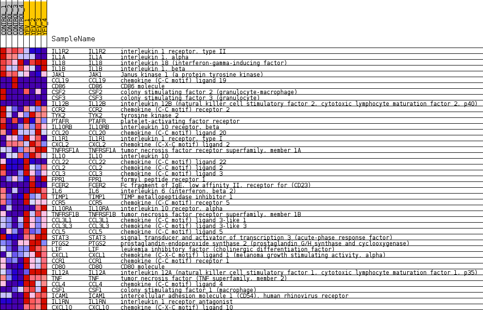
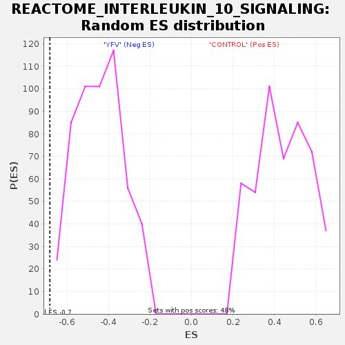

Profile of the Running ES Score & Positions of GeneSet Members on the Rank Ordered List
| Dataset | MATRIZ_GSE99081_collapsed_to_symbols.gsea_CLASE_99081.cls#CONTROL_versus_YFV |
| Phenotype | gsea_CLASE_99081.cls#CONTROL_versus_YFV |
| Upregulated in class | YFV |
| GeneSet | REACTOME_INTERLEUKIN_10_SIGNALING |
| Enrichment Score (ES) | -0.68264997 |
| Normalized Enrichment Score (NES) | -1.5478693 |
| Nominal p-value | 0.0 |
| FDR q-value | 0.10138205 |
| FWER p-Value | 0.989 |
| SYMBOL | TITLE | RANK IN GENE LIST | RANK METRIC SCORE | RUNNING ES | CORE ENRICHMENT | |
|---|---|---|---|---|---|---|
| 1 | IL1R2 | interleukin 1 receptor, type II | 81 | 1.359 | 0.0436 | No |
| 2 | IL1A | interleukin 1, alpha | 324 | 0.933 | 0.0620 | No |
| 3 | IL18 | interleukin 18 (interferon-gamma-inducing factor) | 3807 | 0.257 | -0.1438 | No |
| 4 | IL1B | interleukin 1, beta | 4704 | 0.182 | -0.1926 | No |
| 5 | JAK1 | Janus kinase 1 (a protein tyrosine kinase) | 5037 | 0.156 | -0.2075 | No |
| 6 | CCL19 | chemokine (C-C motif) ligand 19 | 5199 | 0.137 | -0.2125 | No |
| 7 | CD86 | CD86 molecule | 6469 | 0.041 | -0.2894 | No |
| 8 | CSF2 | colony stimulating factor 2 (granulocyte-macrophage) | 6975 | 0.012 | -0.3202 | No |
| 9 | CSF3 | colony stimulating factor 3 (granulocyte) | 7438 | 0.000 | -0.3487 | No |
| 10 | IL12B | interleukin 12B (natural killer cell stimulatory factor 2, cytotoxic lymphocyte maturation factor 2, p40) | 9935 | -0.022 | -0.5020 | No |
| 11 | CCR2 | chemokine (C-C motif) receptor 2 | 10067 | -0.029 | -0.5091 | No |
| 12 | TYK2 | tyrosine kinase 2 | 10673 | -0.073 | -0.5438 | No |
| 13 | PTAFR | platelet-activating factor receptor | 10886 | -0.092 | -0.5536 | No |
| 14 | IL10RB | interleukin 10 receptor, beta | 10989 | -0.101 | -0.5563 | No |
| 15 | CCL20 | chemokine (C-C motif) ligand 20 | 11006 | -0.101 | -0.5537 | No |
| 16 | IL1R1 | interleukin 1 receptor, type I | 11566 | -0.152 | -0.5828 | No |
| 17 | CXCL2 | chemokine (C-X-C motif) ligand 2 | 11660 | -0.161 | -0.5828 | No |
| 18 | TNFRSF1A | tumor necrosis factor receptor superfamily, member 1A | 12354 | -0.229 | -0.6174 | No |
| 19 | IL10 | interleukin 10 | 13058 | -0.308 | -0.6497 | No |
| 20 | CCL22 | chemokine (C-C motif) ligand 22 | 13128 | -0.318 | -0.6426 | No |
| 21 | CCL2 | chemokine (C-C motif) ligand 2 | 13259 | -0.335 | -0.6387 | No |
| 22 | CCL3 | chemokine (C-C motif) ligand 3 | 13556 | -0.374 | -0.6436 | No |
| 23 | FPR1 | formyl peptide receptor 1 | 14091 | -0.458 | -0.6602 | No |
| 24 | FCER2 | Fc fragment of IgE, low affinity II, receptor for (CD23) | 14456 | -0.500 | -0.6648 | Yes |
| 25 | IL6 | interleukin 6 (interferon, beta 2) | 14705 | -0.542 | -0.6607 | Yes |
| 26 | TIMP1 | TIMP metallopeptidase inhibitor 1 | 14881 | -0.588 | -0.6505 | Yes |
| 27 | CCR5 | chemokine (C-C motif) receptor 5 | 14923 | -0.598 | -0.6316 | Yes |
| 28 | IL10RA | interleukin 10 receptor, alpha | 14944 | -0.605 | -0.6112 | Yes |
| 29 | TNFRSF1B | tumor necrosis factor receptor superfamily, member 1B | 15066 | -0.643 | -0.5956 | Yes |
| 30 | CCL3L1 | chemokine (C-C motif) ligand 3-like 1 | 15102 | -0.654 | -0.5744 | Yes |
| 31 | CCL3L3 | chemokine (C-C motif) ligand 3-like 3 | 15121 | -0.663 | -0.5518 | Yes |
| 32 | CCL5 | chemokine (C-C motif) ligand 5 | 15208 | -0.693 | -0.5324 | Yes |
| 33 | STAT3 | signal transducer and activator of transcription 3 (acute-phase response factor) | 15310 | -0.748 | -0.5119 | Yes |
| 34 | PTGS2 | prostaglandin-endoperoxide synthase 2 (prostaglandin G/H synthase and cyclooxygenase) | 15465 | -0.811 | -0.4924 | Yes |
| 35 | LIF | leukemia inhibitory factor (cholinergic differentiation factor) | 15543 | -0.855 | -0.4666 | Yes |
| 36 | CXCL1 | chemokine (C-X-C motif) ligand 1 (melanoma growth stimulating activity, alpha) | 15550 | -0.859 | -0.4362 | Yes |
| 37 | CCR1 | chemokine (C-C motif) receptor 1 | 15616 | -0.893 | -0.4083 | Yes |
| 38 | CD80 | CD80 molecule | 15690 | -0.977 | -0.3778 | Yes |
| 39 | IL12A | interleukin 12A (natural killer cell stimulatory factor 1, cytotoxic lymphocyte maturation factor 1, p35) | 15716 | -1.001 | -0.3436 | Yes |
| 40 | TNF | tumor necrosis factor (TNF superfamily, member 2) | 15727 | -1.013 | -0.3080 | Yes |
| 41 | CCL4 | chemokine (C-C motif) ligand 4 | 15829 | -1.178 | -0.2721 | Yes |
| 42 | CSF1 | colony stimulating factor 1 (macrophage) | 15861 | -1.220 | -0.2303 | Yes |
| 43 | ICAM1 | intercellular adhesion molecule 1 (CD54), human rhinovirus receptor | 15865 | -1.225 | -0.1867 | Yes |
| 44 | IL1RN | interleukin 1 receptor antagonist | 16135 | -2.507 | -0.1136 | Yes |
| 45 | CXCL10 | chemokine (C-X-C motif) ligand 10 | 16187 | -3.355 | 0.0032 | Yes |

